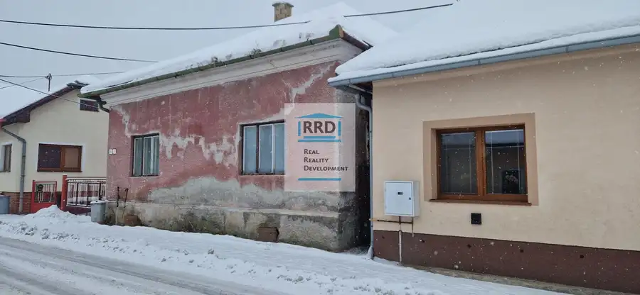
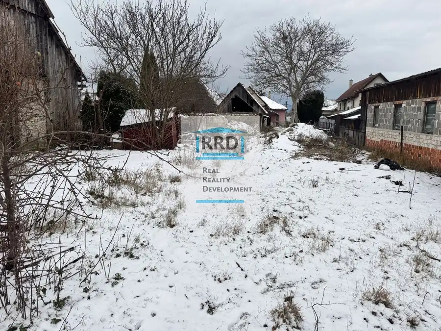
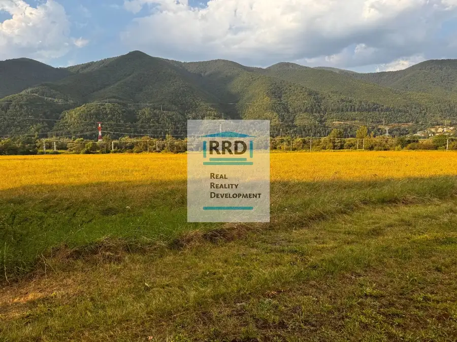

Predaj · Pozemok
Stavebný pozemok v Obci Karlová. Super cena!
Karlová
113 000 €54 € za m²
- Plocha2091 m²
- VlastníctvoOsobné
O nehnuteľnosti
PREDAJ: Stavebný pozemok o výmere 2 091 m² v obci Karlová.Základné parametre:Výmera: 2 091 m².Inžinierske siete: Vybudovaná elektrická a vodovodná prípojka priamo na pozemku.Odpad: Riešený formou žumpy.Stavebný status: K pozemku bolo vydané stavebné povolenie (aktuálne expirované – slúži ako potvrdenie zastaviteľnosti a podklad pre nový projekt).Bližšie informácie Vám poskytne: Martin Huličiar, tel.: 0915982394, e-mail: huliciar@rrd.sk, martin.hulo@gmail.com
Parametre
| Druh | Pozemok pre rodinné domy |
|---|---|
| Dátum zverejnenia | 13. 3. 2019 |
| Dĺžka pozemku | 50 |
| Elektrina | Na pozemku - 230 V |
| Funkčné využitie | Výstavba rodinného domu |
| Odpadové vody | Na pozemku - Žumpa |
| Plocha pozemku | 2091 m² |
| Plyn | Nedostupné |
| Pripravenosť k výstavbe | Vydané stavebné povolenie |
| Prístupová komunikácia | Štrková |
| Terén pozemku | Rovinatý |
| Typ | Predaj |
| Vlastníctvo | Osobné |
| Voda | Na pozemku - Diaľkový vodovod |
| Šírka pozemku | 42 |
Kde to je


Ďalšie ponuky
Celá ponukaMohlo by Vás zaujímať

DomNové8 79 000 €Starší rodinný dom v obci Mošovce. Exkluzívne. 1881m2 Mošovce 240 m² Ponúkame na predaj starší rodinný dom v obci Mošovce, známej svojou bohatou históriou a množstvom zachovaných pamätihodností.Postavený je z kameňa,…
PozemokNové4 79 000 €Iba u nás na predaj stavebný pozemok v obci Mošovce Mošovce 1881 m² Exkluzívne ponúkame na predaj pozemok o rozlohe 1881 m² v tichej a vyhľadávanej lokalite obce Mošovce za cenu 107 000 €. Pozemok je ideálny pre…
PozemokNové2 Cena dohodouInvestičný pozemok na komerčne využitie vo Vrútkach. 1391 m2 Vrútky 1391 m² Ponúkame Vám na predaj pozemok, nachádzajúci sa na okraji mesta Vrútky v smere na Za. Výmera pozemku je 1391m2, rozmery pozemku cca 7 x 240m. V…